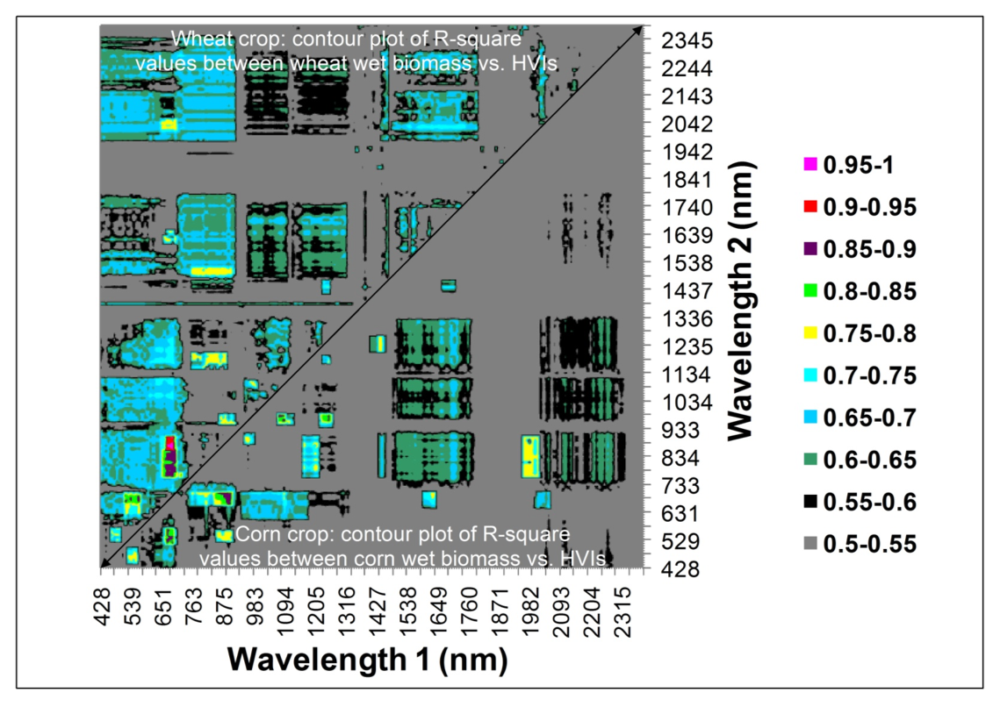
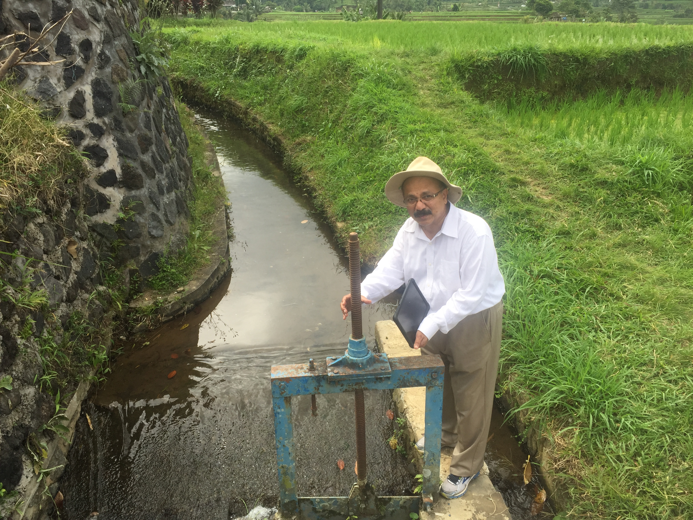

Global Hyperspectral Imaging Spectroscopy of Agricultural-Crops & Vegetation
Advances of Last 50 Years of Research
RESEARCH CONDUCTED OVER LAST 20 YEARS
The primary focus is on the seminal research conducted over last 20
years by this group using hyperspectral data of agricultural crops and
vegetation, gathered from around the world, from various platforms:
ground-based, platform-mounted, drone or unmanned aerial vehicle
(UAV)-based, airborne, and spaceborne. The leading world crops studied
include wheat, rice, corn, soybeans, barley, cotton, and alfalfa
(
Table 1
). Natural vegetation’s in the African savannas and rainforests
were also studied using hyperspectral (or imaging spectroscopy) data.
Characteristics of these sensors can be found here (
Table 2
).
Table 1
Table 2
RESEARCH CONDUCTED OVER LAST 50 YEARS
The secondary focus is on the compendium of the hyperspectral remote
sensing of vegetation and agricultural crops research conducted by a large
community of global researchers over last 50 years. This is summarized in
a book on “hyperspectral remote sensing of vegetation” (Publisher: Taylor
and Francis, Inc.):
CRC Press However, a more comprehensive 4 volumes “hyperspectral remote sensing of
vegetation and agricultural crops” (Publisher: Taylor and Francis, Inc.)
will be published by the end of 2018 or early 2019.
GLOBAL HYPERSPECTRAL IMAGING SPECTRAL-LIBRARY OF AGRICULTURAL-CROPS (GHISA)
The tertiary focus is in establishing global hyperspectral imaging
spectral-library of agricultural-crops (GHISA) for some of the major
crops of the world (
Table 1
) for various locations of the world and at
various growth stages. The crops include wheat, rice, corn, soybeans,
barley, and cotton (
Table 1
). Hyperspectral data for GHISA is gathered
from ground-based and speaceborne Hyperion based sensors (see
Table 1
for data characteristics of these sensors).
Table 1
HYPERSPECTRAL REMOTE SENSING OR IMAGING SPECTROSCOPY
Species composition (e.g., chromolenea odorata vs. imperata cylindrica),
Vegetation or crop type (e.g., soybeans vs. corn),
Disease and stress (e.g., insect infestation, drought),
Nutrients (e.g., Nitrogen),
Moisture (e.g., leaf moisture),
Light use efficiency,
Net primary productivity and so on.
The goal of using hyperspectral narrowband (HNB) data, as opposed
to multispectral broadband (MBB) data, is to increase accuracies and
reduce uncertainties in study of various vegetation and agricultural
crop classification outcomes, and in modeling and mapping these quantities.
Hyperspectral Narrowband
Significantly improved characterization and modeling of a wide array of biophysical and biochemical properties of vegetation,
ability to discriminate plant species and vegetation types with high degree of accuracy,
reducing uncertainties in determining net primary productivity or carbon assessments from terrestrial vegetation,
improved crop productivity and water productivity models,
ability to assess stress resulting from causes such as management practices, pests and disease, water deficit or water excess, and
establishing more sensitive wavebands and indices to study vegetation characteristics.
Hyperspectral sensors and their characteristics,
methods of overcoming the Hughes phenomenon,
characterizing biophysical and biochemical properties,
advances made in using hyperspectral data in modeling evapotranspiration or actual water use by plants,
study of phenology, light use efficiency, and gross primary productivity,
improved accuracies in species identification and land cover classifications, and
applications in precision farming.
One of the first goal of any hyperspectral data analysis is in
dimensionality reduction to overcome data redundancy and to optimize
most valuable data for a given application. This requires data mining.
Feature selection is necessary in any data mining effort. Feature
selection reduces the dimensionality of data by selecting only a
subset of measured features (predictor variables).
Information Content (e.g., Selection based on Theoretical Knowledge, Band Variance, Information Entropy),
Projection-Based methods (e.g., Principal Component Analysis or PCA),
Similarity Measures (e.g., Correlation coefficient, Spectral Derivative Analysis), and
Other Methods (e.g., wavelet Decomposition Method).
Hyperspectral narrowband (HNB) data is known to provide significant
advances in modelling, mapping, and monitoring agricultural crop and
vegetation biophysical and biochemical quantities.
Biomass: wet and dry; (kg\m2);
Leaf area index (LAI),
Green LAI; (m2\m2);
Plant height; (mm);
Vegetation fraction; (%);
Fraction of PAR absorbed by photosynthetically active vegetation (fAPAR); (MJ\m2);
Total crop chlorophyll content; (g\m2), and
Gross primary production. (g C\m2\yr).
Biochemistry (e.g., plant pigments, water, and structural carbohydrates):
chlorophyll a (chl-a): absorbs in 410-430 nm and 600-690 nm;
chlorophyll b (chl-b): absorbs in 450-470 nm;
carotenoids (e.g., β-carotene and lutein): peak absorption in wavebands ≺500 nm;
anthocyanin’s,
lignin, cellulose, protein, and
Nitrogen: relatively low reflectance and strong absorption in SWIR bands by water that masks other absorption features.
However, dry leaves do not have strong water absorption and reveal
overlapping absorptions by carbon compounds, such as lignin and
cellulose, and other plant biochemical, including protein, nitrogen, starch, and sugars.
HYPERSPECTRAL VEGETATION INDICES (HVIs)
(e.g.,
Table 3
) provide opportunity to study specific biophysical and
biochemical quantities more precisely than multispectral broadband derived
indices.
Physically meaningful indices (e.g., Photochemical reflective index (PRI) as proxy for light use efficiency (LUE)),
significant improvement in sensor saturation relative to broadbands,
providing greater sensitivity (e.g., an index involving NIR reflective maxima @ 900 nm and red absorption maxima @ 680 nm);
new indices not sampled by broadbands such as water-based indices (e.g., involving 970 nm or 1240 nm along with a non-absorption band, and
multi-linear indices involving more than 2 bands.
The research also recommends, through comprehensive research, optimal
hyperspectral narrowbands (see
Table 4
) and the best incremental bands (see
Table 5
) in study of agriculture and vegetation.
Table 3
Table 4
Table 5


This research is led by Dr. Prasad S. Thenkabail, Research Geographer @
the United States Geological Survey (USGS) and his team of researchers at
various time periods: Dr. Michael Marshall (2013-2016) who is currently
with the International Institute for Geo-Information Science and Earth
Observation (ITC), Netherlands, Dr. Isabella Mariotto (2012-2014) who
is currently with the University of New Mexico, Dr. Itiya Aneece
(2016-present), Dr. Pardhasaradhi Teluguntla, of Bay Area Environmental
Research Institute (BAERI) @ United States Geological Survey, and Dr.
Muralikrishna Gumma of the International Crops Research Institute for
the Semi-Arid Tropics (ICRISAT). A number of other have made important
contributions and they are acknowledged as co-authors in relevant
manuscripts and\or as partners\collaborators in the people biographies.